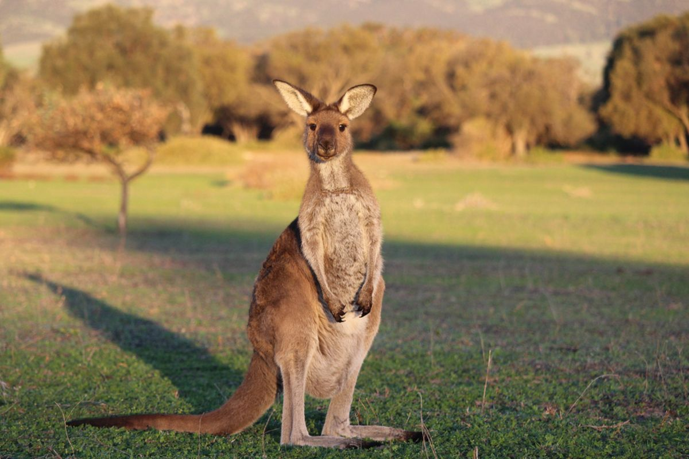
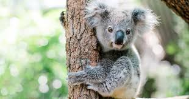
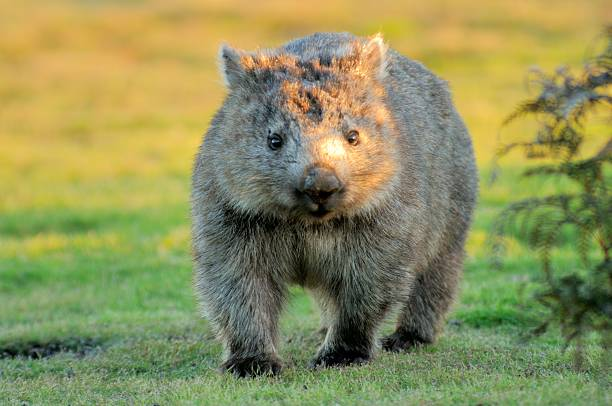
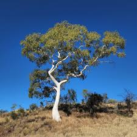
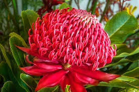
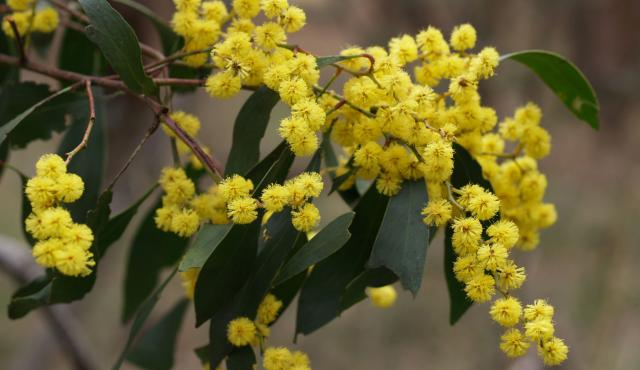

FAUNA IKONIKKangaroo (Kanguru)
Mamalia berkantung (marsupial) khas Australia yang bergerak aktif dengan cara melompat.
Pelajari Detail Spesies →
FAUNA HERBIVORKoala
Hewan berkantung lucu pemakan daun eukaliptus yang menghabiskan hidupnya di atas pohon.
Pelajari Detail Spesies →
FAUNA ENDEMIKWombat
Mamalia berkantung penggali liang dengan tubuh gempal mirip beruang kecil.
Pelajari Detail Spesies →
FLORA DOMINANEucalyptus Tree
Pohon beraroma harum penghasil minyak atsiri yang mendominasi 75% hutan di Australia.
Pelajari Detail Spesies →
FLORA NEW SOUTH WALESWaratah Flower
Bunga semak liar merah besar berbentuk mahkota yang megah.
Pelajari Detail Spesies →
FLORA NASIONALGolden Wattle
Bunga nasional resmi Australia dengan bunga-bunga kecil kuning cerah selembut kapas.
Pelajari Detail Spesies →